- 창립 연도
- —
- 소재지
- —
보리는 밀보다 먼저 사람이 기르기 시작한 곡물 가운데 하나입니다. 밥과 차, 엿기름, 맥주까지 쓰임이 넓습니다. 이번 호는 전북 김제의 보리밭과 스코틀랜드 몰트 공장, 보리차를 볶는 방앗간을 다룹니다.
“보리는 겨울을 나야 여뭅니다. 추위를 견딘 만큼 단맛이 들지요.”
- 최영순, 김제 보리 농가
보리는 밀보다 먼저 사람이 기르기 시작한 곡물 가운데 하나입니다. 밥과 차, 엿기름, 맥주까지 쓰임이 넓습니다. 이번 호는 전북 김제의 보리밭과 스코틀랜드 몰트 공장, 보리차를 볶는 방앗간을 다룹니다.
“보리는 겨울을 나야 여뭅니다. 추위를 견딘 만큼 단맛이 들지요.”
- 최영순, 김제 보리 농가
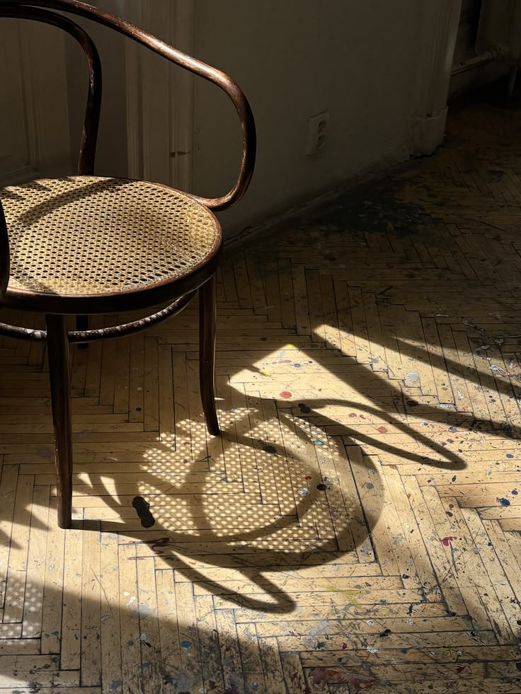
벤트우드 체어는 증기로 쪄서 구부린 너도밤나무 막대 6개와 나사 10개로 만든 의자입니다. 1859년 빈의 가구 공방에서 처음 나왔고, 분해한 상태로 상자 하나에 36개를 넣어 배로 실어 보낼 수 있었습니다. 이번 호에서는 5개 도시의 카페와 집에서 이 의자를 쓰는 사람들을 만나 160년 동안 같은 모양이 남은 이유를 살폈습니다.
“이 의자는 고칠 수 있어서 오래 남았습니다. 다리가 부러지면 다리만 바꾸면 되니까요.”
- 마르쿠스 하버, 빈 가구 복원가
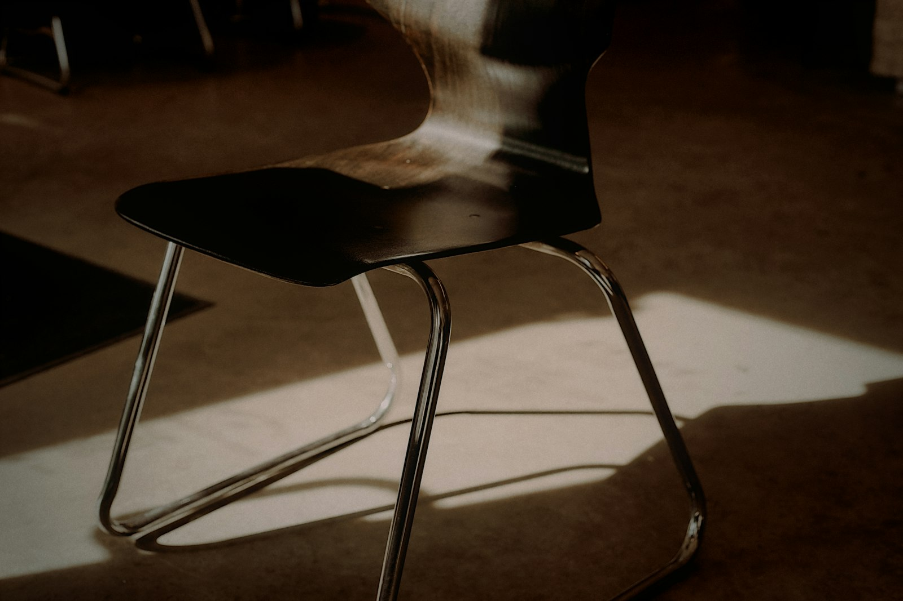
캔틸레버 체어는 뒷다리 없이 강철관 하나를 구부려 앉는 사람의 무게를 받치는 의자입니다. 1927년 슈투트가르트의 주택 전시회에서 처음 소개됐습니다. 이번 호는 강철관을 구부리는 공장과 이 의자를 회의실에 들인 사무실 4곳을 기록했습니다.
“앉으면 살짝 내려앉았다가 다시 올라옵니다. 그 몇 밀리미터가 이 의자의 전부입니다.”
- 한스 크뤼거, 강철관 가구 기술자
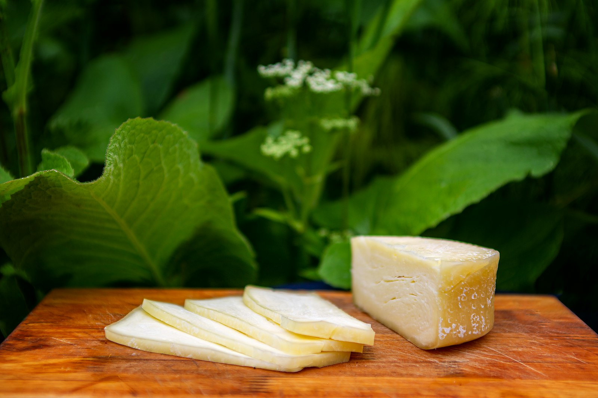
치즈는 우유를 굳혀 물기를 빼고 숙성한 음식입니다. 세계에 1,800여 종이 있고, 같은 우유로도 숙성 기간에 따라 맛이 전혀 달라집니다. 이번 호는 쥐라 산맥의 동굴 숙성고와 평창 목장, 치즈 가게 3곳을 기록했습니다.
“치즈는 목장의 날씨를 그대로 담습니다. 비가 많이 온 해의 치즈는 맛으로 그 해를 기억합니다.”
- 앙투안 뒤부아, 쥐라 치즈 숙성가
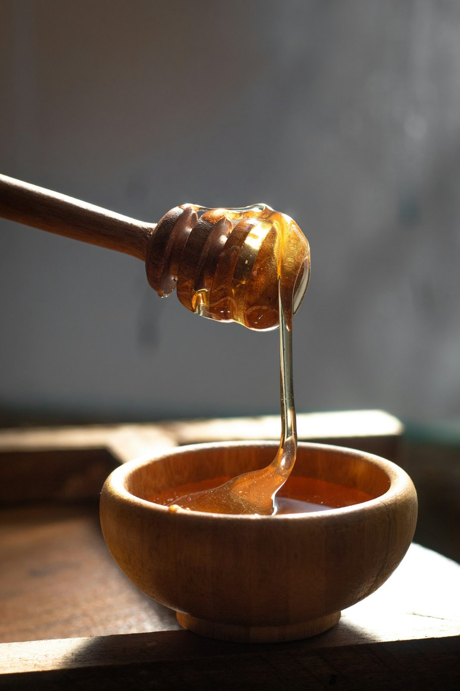
꿀은 꿀벌이 꽃의 단물을 모아 벌집 안에서 졸여 낸 먹거리입니다. 어떤 꽃에서 모았는지에 따라 색과 맛이 달라집니다. 이번 호는 지리산 양봉가와 뉴질랜드 마누카 농장, 꿀로 디저트를 만드는 제과점을 다룹니다.
“한 숟가락의 꿀을 모으려면 벌 열두 마리가 평생을 일해야 합니다. 그 숫자를 알고 나면 함부로 남기지 않게 됩니다.”
- 정만호, 지리산 양봉가
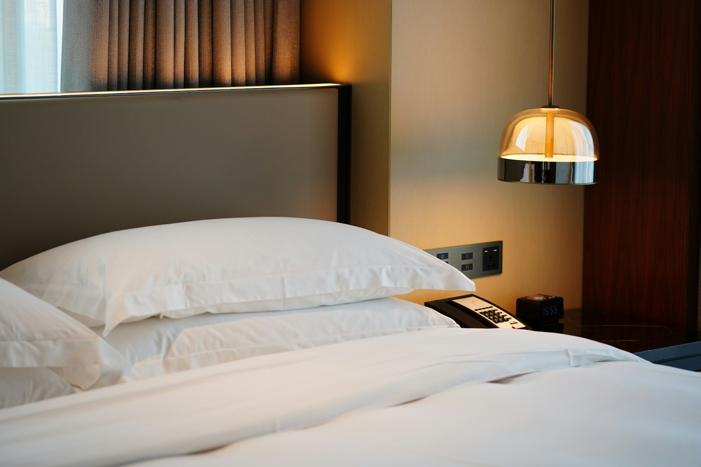
호텔 오룸은 2004년 리스본의 오래된 인쇄소 건물을 고쳐 문을 연 호텔입니다. 지점마다 그 동네의 옛 건물을 쓰고, 객실 가구의 70%를 지역 공방에 맡깁니다. 이번 호에서는 리스본·포르투·마데이라 세 지점과 객실 청소 담당자의 하루를 기록했습니다.
“손님이 호텔 밖으로 나가 동네 식당에서 저녁을 먹는다면 우리는 일을 잘한 것입니다. 호텔은 동네로 들어가는 문입니다.”
- 이네스 소아르스, 호텔 오룸 총지배인
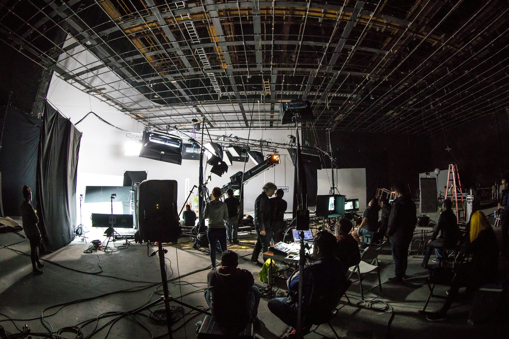
카메로는 1952년 나고야의 렌즈 공장에서 출발한 카메라 회사입니다. 필름 카메라 시절의 다이얼 배치를 디지털 카메라에도 그대로 옮겨, 셔터 속도와 조리개를 손가락으로 바로 바꿀 수 있게 했습니다. 이번 호에서는 렌즈 연마 공정과 수리 창구, 3대째 같은 카메라를 쓰는 사진관을 찾았습니다.
“메뉴를 열지 않고 찍을 수 있어야 합니다. 사진가의 눈은 피사체에 머물러야 하니까요.”
- 사토 유이치, 카메로 상품기획 부장
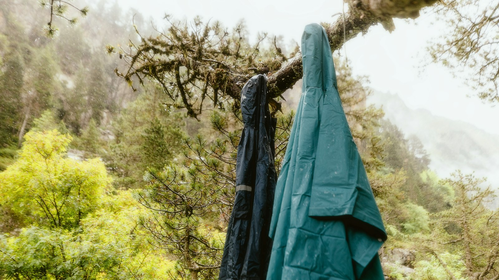
코르소는 1996년 밴쿠버의 산악 구조대원 두 명이 만든 아웃도어 의류 브랜드입니다. 비가 잦은 해안 산맥에서 쓰기 위해 방수 재킷의 봉제선을 줄이는 데 집중했고, 지금은 재킷 한 벌에 들어가는 봉제선이 처음의 절반입니다. 이번 호는 시험 산행과 수선 센터, 재킷을 물려 입는 가족을 기록했습니다.
“고장 난 재킷을 들고 오는 사람이 많을수록 좋습니다. 그만큼 오래 입었다는 뜻이니까요. 수선 센터는 우리 회사에서 가장 바쁜 부서입니다.”
- 레이철 웨스트, 코르소 공동 창업자
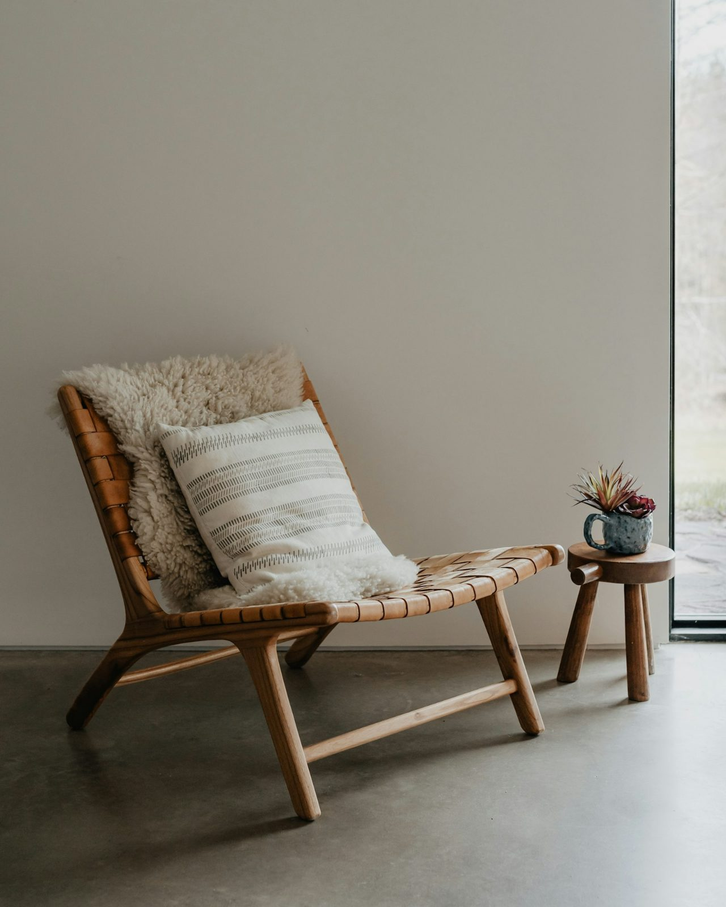
라운지 체어는 성형 합판 셸 세 장과 가죽 쿠션으로 만든 안락의자입니다. 1956년 미시간의 가구 회사가 처음 생산했고, 지금도 같은 공정으로 한 해 1만 2,000개를 만듭니다. 이번 호에서는 합판을 누르는 금형과 이 의자에 앉아 책을 읽는 사람들을 기록했습니다.
“오래 앉아 있어도 자세를 고칠 필요가 없는 의자. 처음 그렸을 때의 메모가 지금도 공장 벽에 붙어 있습니다.”
- 데이비드 콜린스, 미시간 공장장
메리드는 1958년 리옹의 테니스 코치 질 메리드가 연습용 셔츠를 만들며 시작한 브랜드입니다. 땀이 빨리 마르는 면 피케 원단과 짧은 소매 트임으로 코트 위 움직임을 기준 삼아 옷을 만들었고, 지금은 테니스 셔츠와 니트, 신발까지 연간 3,200만 벌을 생산합니다. 이번 호에서는 리옹 공장과 파리 아카이브, 서울의 수집가를 찾아 셔츠 한 벌이 70년 동안 바뀐 과정과 바뀌지 않은 기준을 기록했습니다.
“셔츠 한 벌의 기준은 지금도 같습니다. 서브를 넣을 때 어깨가 걸리지 않을 것, 세 세트를 치고도 무겁지 않을 것. 나머지는 그 기준을 지키는 방법입니다.”
- 클레르 앙베르, 메리드 디자인 디렉터
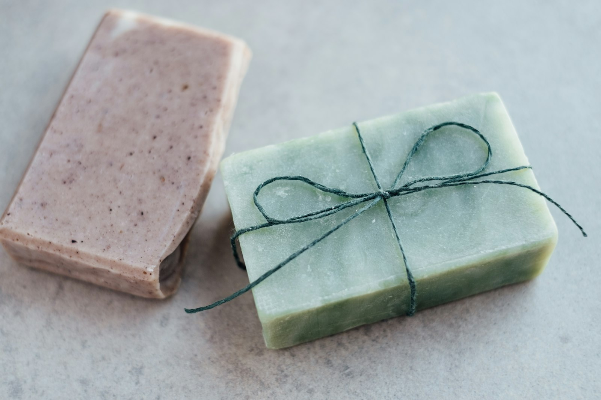
뮤르는 2012년 제주의 감귤 농가에서 나온 껍질로 비누를 만들며 시작한 생활용품 브랜드입니다. 지금은 비누와 샴푸 바, 손 세정제를 만들고 포장재의 92%를 종이로 바꿨습니다. 이번 호는 숙성실에서 6주를 보내는 비누 한 장의 과정을 따라갑니다.
“비누는 쓸수록 작아집니다. 마지막 조각까지 쓰게 만드는 것이 우리가 정한 품질 기준입니다.”
- 고은채, 뮤르 대표
노부는 1999년 함부르크의 녹음 엔지니어들이 만든 헤드폰 브랜드입니다. 스튜디오 모니터링용 제품으로 시작해 지금은 가정용 스피커와 무선 헤드폰까지 만들고, 모든 제품의 부품을 교체할 수 있게 설계합니다. 이번 호는 무향실 측정과 수리 매뉴얼, 20년 된 헤드폰을 쓰는 녹음실을 기록했습니다.
“좋은 소리는 귀가 피곤하지 않은 소리입니다. 여덟 시간 녹음을 마친 엔지니어가 다음 날 다시 쓰고 싶은지가 기준입니다.”
- 프랑크 바이스, 노부 음향 설계 책임
오달린은 2007년 그라스의 조향사 마리 오달린이 연 향수 공방입니다. 원료 농가 11곳과 직접 계약해 장미와 재스민을 들여오고, 향 하나를 완성하는 데 평균 2년을 씁니다. 이번 호에서는 수확 철의 꽃밭과 증류실, 공방의 향 기록 노트 412권을 살폈습니다.
“향은 기억과 함께 남습니다. 그래서 같은 이름의 향수는 20년 뒤에도 같은 냄새가 나야 합니다. 원료가 바뀌어도 그 약속은 바뀌면 안 됩니다.”
- 마리 오달린, 오달린 창업자
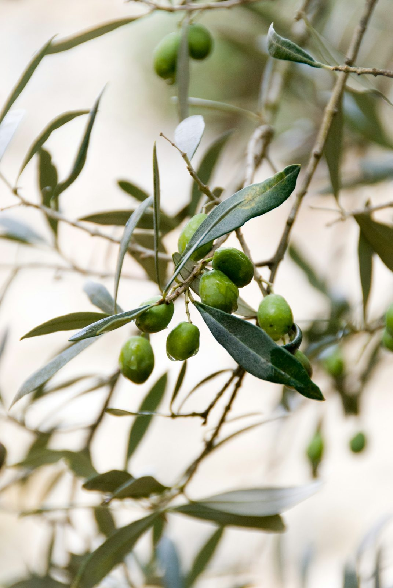
올리브는 지중해 연안에서 6,000년 넘게 길러 온 나무의 열매입니다. 열매를 소금물에 절이거나 눌러 기름을 짭니다. 이번 호에서는 크레타의 올리브 농장과 착유소, 올리브유를 매일 쓰는 식당을 찾았습니다.
“나무 한 그루가 1년 동안 내는 기름은 한 병 반입니다. 그 병을 열 때마다 나무 한 그루의 1년을 쓰는 셈입니다.”
- 니코스 파파도풀로스, 크레타 올리브 농부
오스텐 커피는 2010년 오슬로의 작은 로스터리에서 시작한 커피 브랜드입니다. 생두를 밝게 볶아 산미를 남기는 방식으로 알려졌고, 지금은 9개 도시에서 매장 31곳을 운영합니다. 이번 호에서는 콜롬비아 농장과 오슬로 로스터리, 서울 매장의 아침을 따라갔습니다.
“매장은 커피를 파는 곳이기 전에 동네 사람들이 하루를 시작하는 곳입니다. 그래서 우리는 문을 여는 시간을 가장 먼저 정합니다.”
- 라르스 오스텐, 오스텐 커피 창업자
파피로는 1924년 볼로냐의 제본소에서 시작한 문구 브랜드입니다. 실로 꿰맨 공책과 가죽 표지 수첩을 만들며, 종이 두께와 결 방향까지 공책마다 기록해 둡니다. 이번 호에서는 제본 기계 7대가 남은 공장과 공책을 50권 넘게 채운 작가를 만났습니다.
“공책은 펼쳤을 때 평평하게 누워야 합니다. 쓰는 사람이 손으로 누르고 있어야 한다면 그건 실패한 제본입니다.”
- 루카 페라리, 파피로 제본 책임

펠로는 1976년 런던의 자전거 수리공이 만든 접이식 자전거 브랜드입니다. 20초 안에 접혀 지하철에 실을 수 있는 크기를 기준으로 설계했고, 지금도 런던 공장에서 한 해 4만 대를 손으로 조립합니다. 이번 호는 부품 1,200개가 한 대의 자전거가 되는 과정을 기록했습니다.
“도시의 자전거는 달리는 시간보다 서 있는 시간이 깁니다. 접힌 상태가 펼친 상태만큼 중요합니다.”
- 톰 에일윈, 펠로 엔지니어
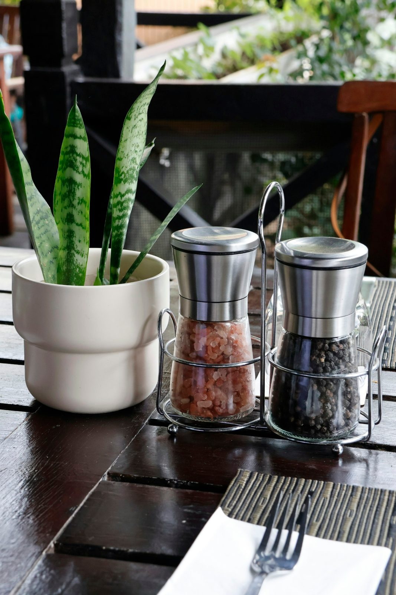
후추는 인도 서남부 케랄라 해안에서 자라는 덩굴 식물의 열매입니다. 익기 전에 따서 말리면 검은 후추, 껍질을 벗기면 흰 후추가 됩니다. 이번 호에서는 케랄라의 농장과 향신료 경매장, 서울의 식당 주방 5곳을 찾아 한 알의 후추가 접시에 오르기까지를 기록했습니다.
“후추는 마지막에 갈아야 합니다. 갈아 둔 후추는 10분이면 향의 절반을 잃습니다.”
- 박도윤, 서울 비스트로 셰프
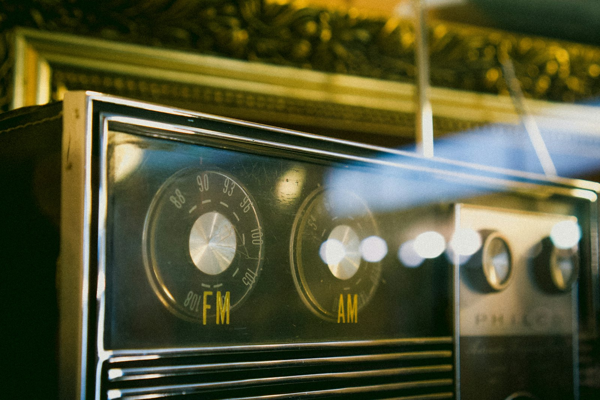
플라나는 1948년 취리히에서 라디오 수신기를 만들던 회사입니다. 지금은 라디오와 함께 지역 방송 앱을 운영하며 청취자 140만 명에게 뉴스와 음악을 전합니다. 이번 호는 70년 된 수신기 설계도와 새벽 뉴스 편성실을 함께 다룹니다.
“라디오는 듣는 사람이 다른 일을 하게 놓아두는 매체입니다. 우리는 그 자리를 지키려고 화면을 만들지 않습니다.”
- 우르스 베버, 플라나 편성 책임
루나는 1974년 탐페레의 신발 공방에서 시작한 러닝화 브랜드입니다. 눈 덮인 길을 달리는 지역 선수들을 위해 바닥이 넓고 가벼운 신발을 만들었고, 지금은 42개국에서 러닝화와 트레일화를 판매합니다. 이번 호는 공방 시절의 수제 틀부터 연구소의 보행 측정 장비까지, 한 켤레를 만드는 데 쓰이는 숫자를 따라갑니다.
“우리 기준은 매일 아침 5킬로미터를 달리는 사람입니다. 그 사람이 10년 동안 같은 신발을 다시 사는지가 우리의 성적표입니다.”
- 안티 레흐토, 루나 제품 총괄
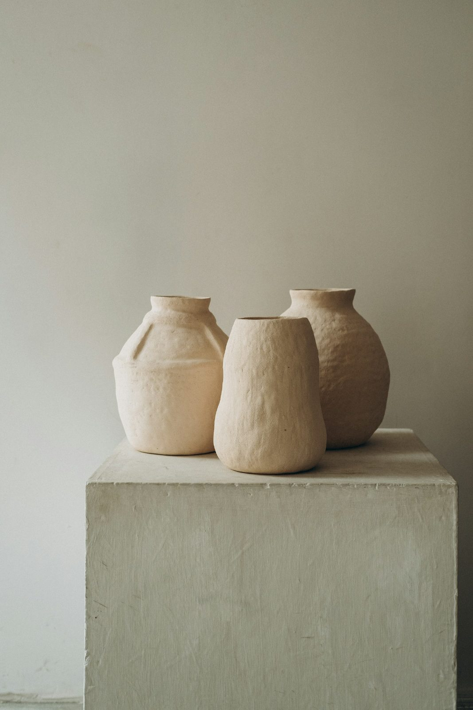
솔룸은 1961년 오르후스의 도공 부부가 세운 도자기 회사입니다. 식탁 위에서 겹쳐 쌓을 수 있는 그릇을 처음 내놓은 뒤 지금까지 같은 틀로 18개 형태를 만듭니다. 이번 호에서는 가마와 유약 실험실, 60년 된 그릇을 매일 쓰는 집을 찾았습니다.
“그릇은 찬장 안에서 보내는 시간이 식탁 위보다 깁니다. 그래서 우리는 잘 쌓이는 모양부터 정합니다.”
- 옌스 홀름, 솔룸 3대 대표
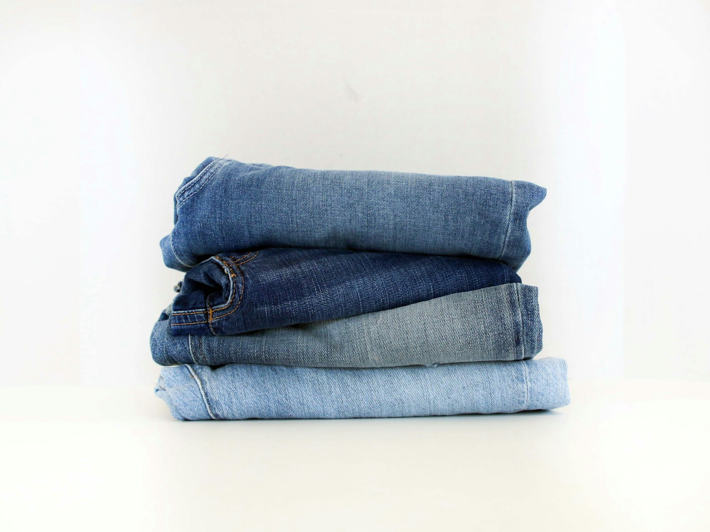
반텔은 1989년 오카야마의 직물 공장 3곳이 함께 세운 데님 브랜드입니다. 옛 셔틀 직기로 짠 폭 80센티미터 원단을 쓰고, 한 벌의 청바지를 만드는 데 37개 공정을 거칩니다. 이번 호에서는 염색 공방과 직기 수리공, 10년 입은 청바지를 모아 온 고객을 만났습니다.
“청바지는 사는 날 완성되지 않습니다. 입는 사람이 무릎을 굽히고 앉는 횟수만큼 색이 빠지고, 그때 비로소 그 사람의 옷이 됩니다.”
- 모리타 겐지, 반텔 공동 창업자
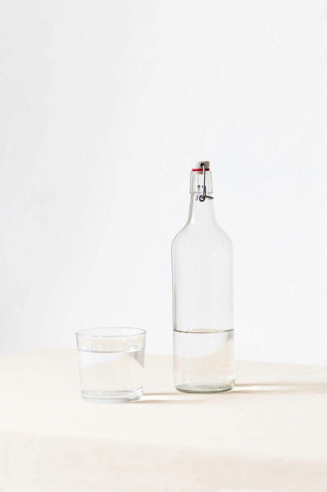
식초는 술이 초산균을 만나 시게 변한 조미료입니다. 쌀·과일·보리 등 무엇으로 빚은 술인지에 따라 맛이 갈립니다. 이번 호에서는 모데나의 숙성 창고와 전남의 감식초 농가, 식초로 피클을 담그는 가정을 찾았습니다.
“식초는 기다림을 파는 일입니다. 우리 창고의 가장 오래된 통은 제 할아버지가 채운 것입니다.”
- 파올로 리치, 모데나 식초 양조가